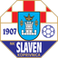

Dinamo Zagreb host Istra 1961 in the HNL (round 14) on Saturday 21 November 2026. Dinamo Zagreb are #74 in our world ranking and have won 3 and lost 2 of their last 5; Istra 1961 are #382 and have won 3, drawn 1 and lost 1 of their last 5. On paper that's a big gap - 308 places - in Dinamo Zagreb's favour.
Our model makes Dinamo Zagreb the favourites at 70%, with a draw at 18% and Istra 1961 at 12%.
Dinamo Zagreb are #74 and Istra 1961 #382 in our world ranking of every senior club. Based on the two clubs' ratings and home advantage, the most likely result is Dinamo Zagreb (70%). More from the HNL.
| Date | Match | Score |
|---|---|---|
| 2026-08-29 | Istra 1961 v Dinamo Zagreb | 2-2 |
| 2026-04-22 | Istra 1961 v Dinamo Zagreb | 0-2 |
| 2026-02-14 | Dinamo Zagreb v Istra 1961 | 4-0 |
| 2025-11-09 | Istra 1961 v Dinamo Zagreb | 2-1 |
| 2025-08-23 | Dinamo Zagreb v Istra 1961 | 3-0 |
| # | Club | P | Pts | World |
|---|---|---|---|---|
| 1 | HNK Hajduk Split | 13 | 29 | #147 |
| 2 | Dinamo Zagreb | 12 | 25 | #74 |
| 3 | NK Osijek | 13 | 20 | #594 |
| 4 | Istra 1961 | 13 | 19 | #382 |
| 5 | NK Varazdin | 13 | 19 | #349 |
| 6 | HNK Rijeka | 12 | 18 | #286 |
Every senior result from every country feeds one Elo rating system, so every club in the world sits on the same scale. Before each match the two ratings, adjusted for home advantage, give the chances of a home win, a draw and an away win. See the full world ranking and every match today.
| # | Club | P | W | D | L | GD | Pts |
|---|---|---|---|---|---|---|---|
| 1 | HNK Hajduk Split | 13 | 9 | 2 | 2 | 16 | 29 |
| 2 | Dinamo Zagreb | 12 | 8 | 1 | 3 | 13 | 25 |
| 3 | NK Osijek | 13 | 6 | 2 | 5 | 4 | 20 |
| 4 | Istra 1961 | 13 | 5 | 4 | 4 | 5 | 19 |
| 5 | NK Varazdin | 13 | 5 | 4 | 4 | 3 | 19 |
| 6 | HNK Rijeka | 12 | 5 | 3 | 4 | 1 | 18 |
| 7 |  NK Slaven Belupo | 13 | 5 | 1 | 7 | -9 | 16 |
| 8 | Rudes | 13 | 5 | 1 | 7 | -11 | 16 |
| 9 | NK Lokomotiva Zagreb | 13 | 3 | 2 | 8 | -7 | 11 |
| 10 | HNK Gorica | 13 | 1 | 4 | 8 | -15 | 7 |